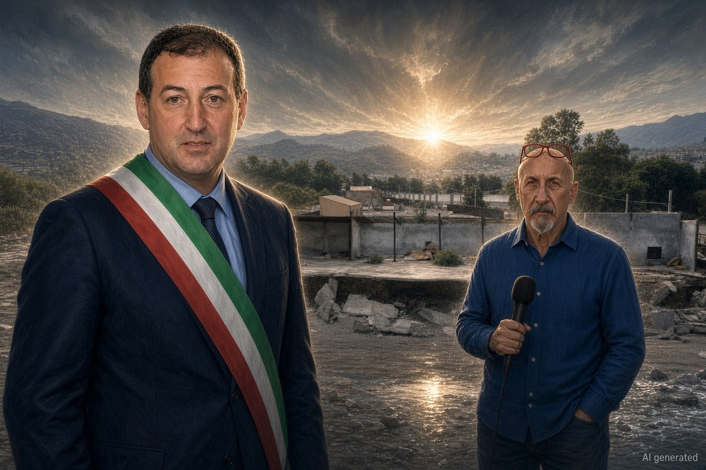

Franco Zanghì
Cronaca · 16 ottobre 2026
Amianto e rifiuti alla foce del Timeto: sequestrata l'area, tre indagati

Circa 3.000 metri quadri sotto sequestro in contrada Playa, con manufatti industriali collassati in mare. Fra i tre indagati c'è il sindaco di Patti, Gianluca Bonsignore, che dieci giorni fa aveva già ricevuto un avviso di garanzia in un'altra vicenda.
di Franco Zanghì
A Patti, dove il torrente Timeto finisce in mare, in contrada Playa, c'è un pezzo di costa che chiunque passi da lì ha visto almeno una volta: capannoni industriali abbandonati, pareti aperte, una parte della struttura franata sotto il livello del mare. Dentro quei manufatti, nei giorni scorsi, la Guardia costiera ha trovato amianto, stampi in vetroresina, resti di imbarcazioni, residui cementizi e detriti.
Da lì è partito un sequestro preventivo di circa 3.000 metri quadri, firmato dal giudice per le indagini preliminari del tribunale di Patti, Eleonora Vona, ed eseguito dai militari della Guardia costiera di Patti e Milazzo, con il coordinamento della Capitaneria di porto di Milazzo. L'inchiesta è per illeciti ambientali e omissione di atti d'ufficio, ed è coordinata dal procuratore facente funzioni Andrea Apollonio.
Le tre posizioni
Gli indagati sono tre, e fra loro c'è il sindaco di Patti, Gianluca Bonsignore. Gli altri due sono la donna proprietaria del vecchio manufatto, accusata di omissione di lavori in edifici che minacciano rovina, e un imprenditore del settore nautico, legale rappresentante dell'impresa che aveva in uso l'area, accusato di gestione di rifiuti non autorizzata: secondo una delle ricostruzioni giornalistiche, oltre 1.200 metri cubi di materiali accumulati.
Per tutti e tre vale la presunzione d'innocenza fino alla sentenza definitiva. Un sequestro preventivo, inoltre, non è una condanna: serve a fermare una situazione, non a stabilire chi ha sbagliato. Al momento non risultano dichiarazioni di nessuno dei tre indagati.
A pochi metri dal depuratore
L'area confina con il depuratore comunale, che sorge anch'esso alla foce del Timeto e che da anni è interessato da lavori di potenziamento: un cantiere da circa 3,3 milioni di euro, appaltato per conto della struttura del commissario unico per la depurazione, che serve a far uscire Patti da una procedura d'infrazione europea. Nello stesso punto della costa convivono quindi i soldi pubblici spesi per smettere di sporcare il mare e un rudere pieno di amianto che frana dentro quello stesso mare.
La vicenda dispone le responsabilità su tre anelli diversi: chi il capannone lo possedeva, chi lo usava e chi quella costa doveva vigilarla. L'inchiesta è aperta, e il numero degli indagati può ancora cambiare.
Il secondo avviso in dieci giorni
Il 6 ottobre 2026, dieci giorni prima, il sindaco di Patti aveva già ricevuto un avviso di garanzia in un'altra vicenda: l'incidente di Patti Marina, il bambino di sei anni caduto dal palco mentre era in bicicletta, un fascicolo per lesioni colpose con quattro indagati. In quell'occasione fu lui a renderlo pubblico per primo, dicendo di volerlo dire alla città prima che lo leggesse sui giornali. Il bambino, nel frattempo, è migliorato: è stato estubato e ha ripreso a parlare.
A Patti si vota nella primavera del 2027, quindi fra meno di un anno. Due avvisi di garanzia in dieci giorni sono un peso politico prima ancora che giudiziario, e lo sarebbero per chiunque sedesse su quella poltrona.
Resta un punto che va oltre i nomi e le date. Quella costa non è diventata così la settimana scorsa: l'amianto non è arrivato ieri, e un capannone non frana in mare in una notte. È stato lasciato lì, davanti a tutti, per anni, a pochi metri dal cantiere che dovrebbe ripulire quel mare, e ci sono voluti un giudice e un sequestro perché qualcuno se ne occupasse. Chi amministra un territorio risponde anche di quello che non guarda.
Fonti
- Gazzetta del Sud, «Patti, degrado ambientale a Playa: tre indagati, c'è anche il sindaco», 16 ottobre 2026
- Gazzetta del Sud, «Rischio ambientale e amianto sulla costa: sequestrata un'area di 3.000 metri quadri alla foce del torrente Timeto a Patti», 13 ottobre 2026
- GLPress, «Patti: il degrado ambientale scoperto alla Playa. Indagati il sindaco Bonsignore e altri due soggetti», 16 ottobre 2026
- AMnotizie, «Patti: area sequestrata in contrada Playa, emessi tre avvisi di garanzia», 16 ottobre 2026
- MessinaToday, «Amianto e manufatti industriali crollati in mare: sequestrati 3.000 metri quadrati sulla costa di Patti»
- Giornale di Lipari, «Patti, sequestrati 3.000 metri quadri alla foce del Timeto: c'è anche amianto», 13 ottobre 2026
- Scomunicando, «Patti, dopo l'incidente del piccolo Andrea il sindaco Bonsignore annuncia di essere indagato», 7 ottobre 2026
- Gazzetta del Sud, «Il bimbo caduto con la bici a Patti è stato estubato: avvisi di garanzia per il sindaco e altre tre persone», 7 ottobre 2026
- Servizi a Rete, «Vanno avanti i lavori per il potenziamento del depuratore di Patti», 10 febbraio 2023
- GLPress, «Elezioni amministrative post-Covid: in provincia di Messina comuni divisi tra il 2026 e il 2027»
L'inchiesta è aperta alla data di pubblicazione e il numero degli indagati può cambiare. Nessuna fonte indica quale reato sia contestato al sindaco: l'articolo riporta che è indagato e quali sono i due reati su cui si indaga, senza attribuirne uno a lui. La data esatta dell'esecuzione del sequestro non è precisata dalle fonti. Il dato dei 1.200 metri cubi di materiali è riportato da una sola fonte. Dei lavori di potenziamento del depuratore, avviati alla fine del 2022, non risulta una fonte recente sullo stato di avanzamento. Al momento non risultano dichiarazioni dei tre indagati.